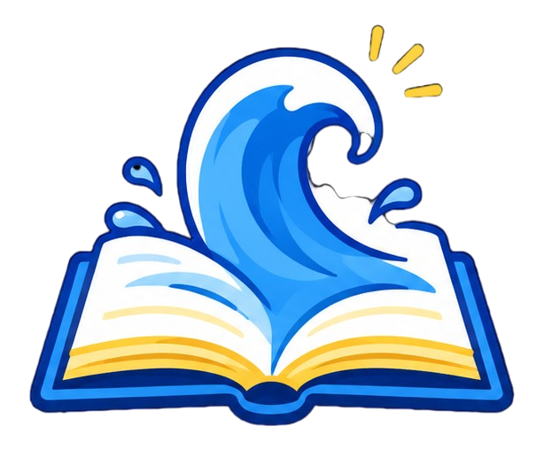

Explora


Escucha, mira y aprende
Nuevo
El cuento de Marino
Una aventura llena de sorpresas te espera en las páginas del mar.
Abrir el cuento
Canción de Guardianes del Mar
Toca play y canta con Marino
0:00 / 0:00
Mira

Video educativo
Aprende de dónde viene la basura del mar y cómo cada gesto pequeño ayuda a cuidarlo.